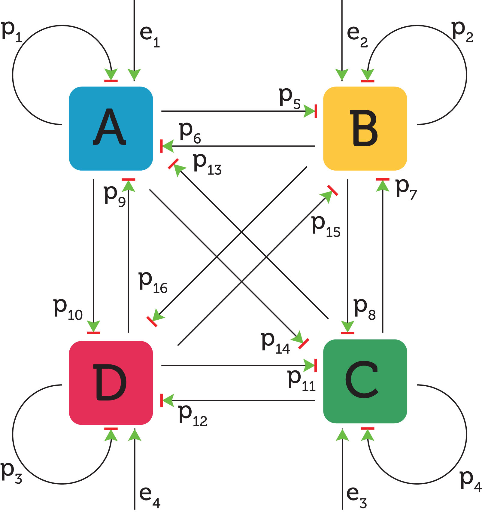
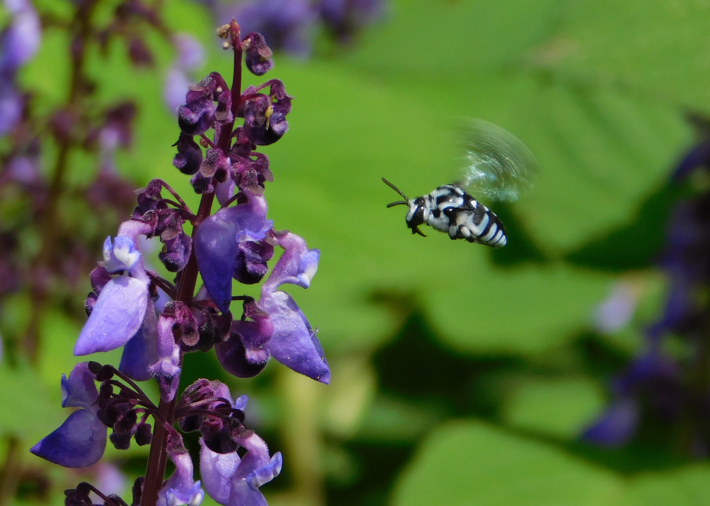
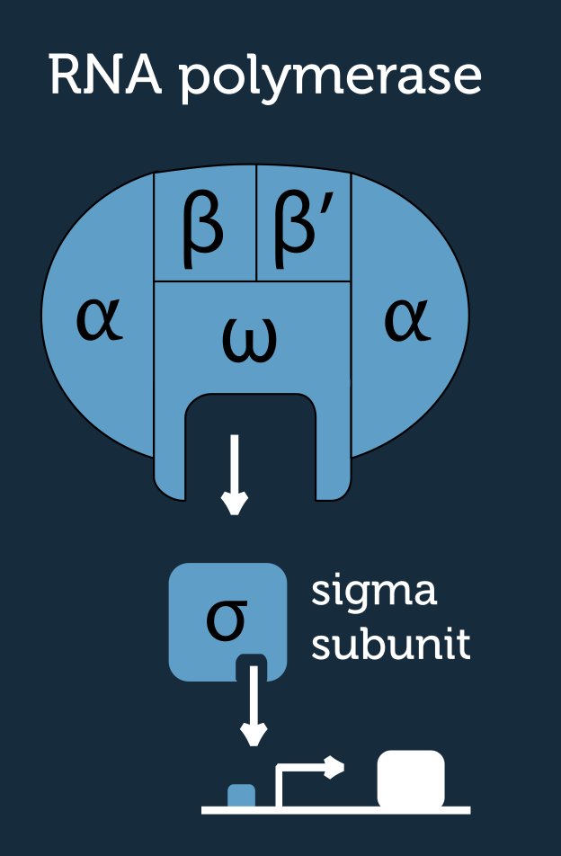
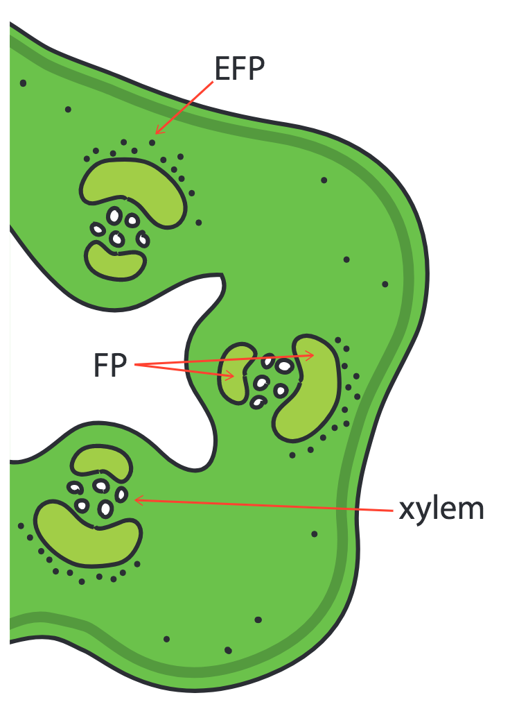

Network evolution
All living organisms are encoded at the genetic level by a set of genes: their DNA. Behaviours and characteristics are determined by which genes are switched on or off at any given time. Genes can interact to switch each other on or off (or turn up/down), and these interactions can be modelled by mathematical networks (or graphs). Simple graphs with known behaviours (such as an oscillator or a switch) are called network motifs, and can be useful in synthetic biology as they can enable us to create desired behaviours. For example the production of a useful chemical or tissue in a fast growing bacterial colony. In this project, I am attempting to develop small network motifs that can perform desired behaviours, but which are resillient to minor random changes (noise) in the environment. I use emulated biological evolution to evolve a population of small, randomly generated networks in silico under conditions that will lead to desired behaviours. This work is not yet published, but I am doing it in the open, so please feel free to check it out on Github.
Bee, virus, and plant interactions model
Cucumber Mosaic Virus (CMV) is a ubiquitous plant virus that infects tomatoes. Tomatoes are pollinated by bumblebees, and whilst they are able to self pollinate, to an extent, without bumblebees, they increase the plant's fertility due to the vibrations of their buzzing. It has been suggested that CMV helps to attract pollinators to susceptible plants, by making them smell more attractive to bumblebees. In order to check whether this change in smell (volatile profile) of infected plants, confers an evolutionary advantage to the virus, I constructed a mathematical model of the system.
The model starts with a bee flight model, taking into account the difference in attractiveness between different plant populations (resistant, susceptible uninfected, and infected), and the difference in fertility between buzz, and non-buzz pollination. The results of this partition feed into a genetic (Mendelean) model that looks at how the population of each of these partitions will change over time. Then the simulation is repeated over evolutionary time to look at the steady state conditions of each population partition. If you are interested in this work, check out the model on Github, or download the report.
Mosquito population dynamics
Aedes albopictus, the asian tiger (or dengue) mosquito, is arguably the most invasive species on earth. Found on all continents except Antarctica, and a notorious vector of many human and livestock viruses, it has a huge economic importance. This study attempts to determine how the mosquito will spread geographically as a result of the changing climate. The model takes survival and growth rate parameters from a comprehensive meta-analysis of lab-based studies to determine functional forms for growth and survial under different environmental conditions. The model is then fitted to field data to generate accurate predictions in a real world scenario. You can read my report here, and the work has now been published (although it went in a direction I wasn't happy with) so you can read that here.

Sigma factor modelling
Sigma factors are proteins in bacteria which are necessary for performing transcription, a vital part of cell-division and therefore population growth. I worked on a model for a study about interesting patterns in the way that transcription factors are expressed (switched on) in the soil dwelling bacteria Bacillus subtilis. This work is not yet published and whilst this would not stop me from sharing it, others who run the project would rather keep it under wraps for now.
Aphid feeding preferences in a dual phloem system
Plants in the family Cucurbitacaeae (cucumbers, melons, pumpkins and squashes) possess two functionally and structurally divergent phloems. This project explored the phloem feeding preferences and behaviours the aphid, Aphis gossypii, within this dual phloem system. I used a range of different methods to determine the feeding habits: EPG (electrical penetration graph) for identifying the specific cells that were being probed; staining and micro-sectioning to observe the aphid mouthparts' (stylets) intercellular path into the plant tissue; and aphid culturing and placement observations (adaxial/abaxial leaf surface, stem etc.). You can read the report here.
